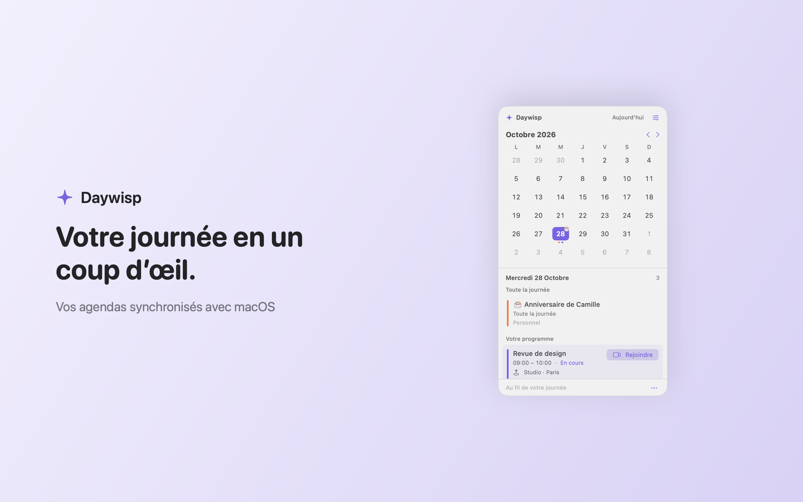

Your calendars together
View calendars already synced with macOS. Pick which ones appear and group matching events while keeping their calendar sources.
A native Mac calendar utility
Your calendars, birthdays and meeting links, together in your Mac menu bar.
Daywisp is currently in development. Requires macOS 14 or later.

View calendars already synced with macOS. Pick which ones appear and group matching events while keeping their calendar sources.
Browse the month, see events and birthdays, open a day in Apple Calendar and join meetings from their links.
A compact native interface, light and dark appearances, custom colors and gentle hover feedback.
Optional Google integration
Connect your Google account in Daywisp to create Meet links through the included Apple Calendar video-conference extension. This connection is separate from the calendar accounts configured in macOS.
Daywisp requests your Google account identifier and email address, and permission to create and manage Meet spaces created by the app. Credentials are stored in the macOS Keychain. Calendar titles, descriptions, attendees and contacts are not sent to Google to create a link.
Google Meet authorization is currently being prepared for public availability. Your account or organization must permit Meet.
How Daywisp handles your data →Calendar and optional Contacts data are processed locally. Daywisp has no developer-hosted calendar account service, advertising or analytics SDK. Google handles the optional Google sign-in and Meet service directly.